File list
Jump to navigation
Jump to search
This special page shows all uploaded files.
{kind=link}
{kind=link}
| Date | Name | Thumbnail | Size | User | Description | Versions |
|---|---|---|---|---|---|---|
| 23:36, 16 September 2015 | Embryo.png (file) | 411 bytes | AloeLeaflet | 1 | ||
| 15:22, 7 January 2016 | Pure Soul.png (file) | 410 bytes | Pruu | for use in Pruu's Guide to Kagerou/Oboro for PVM | 1 | |
| 07:42, 14 October 2016 | Cursed Circle.png (file) | 410 bytes | Ggboyz | 1 | ||
| 06:05, 27 March 2016 | 18586 violet bunny band.png (file) | 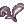 | 410 bytes | Renata | 1 | |
| 04:44, 18 February 2016 | RK MAGN.png (file) | 408 bytes | Shalltear | 1 | ||
| 11:53, 22 January 2020 | MagnumBreak.png (file) |  |
408 bytes | JoaoAlkmim | 1 | |
| 16:13, 22 November 2015 | Ghostchill.png (file) | 408 bytes | Adri | 1 | ||
| 15:23, 7 January 2016 | Shadow Trampling.png (file) | 407 bytes | Pruu | for use in Pruu's Guide to Kagerou/Oboro for PVM | 1 | |
| 16:17, 30 September 2016 | Fortunity - Gigantic Bow.png (file) | 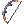 | 407 bytes | Akenoyuki | 1 | |
| 04:40, 6 November 2016 | Moonlight Serenade.png (file) |  |
406 bytes | Ggboyz | 1 | |
| 18:12, 6 November 2015 | KitsuneMask.png (file) | 406 bytes | Adri | 1 | ||
| 11:39, 6 November 2016 | Harmonize.png (file) | 406 bytes | Ggboyz | 1 | ||
| 05:38, 1 October 2016 | Fortunity - EoE Str.gif (file) | 406 bytes | Akenoyuki | 1 | ||
| 01:25, 10 September 2015 | Crystal Pumps.png (file) | 406 bytes | AloeLeaflet | 1 | ||
| 00:26, 14 March 2017 | Cart Revolution.png (file) | 406 bytes | AloeLeaflet | 1 | ||
| 06:59, 2 November 2016 | Warg Bite.png (file) |  |
405 bytes | Ggboyz | 1 | |
| 00:44, 22 May 2019 | Tempcirclet.png (file) | 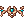 | 405 bytes | Colours | 1 | |
| 17:47, 16 July 2018 | Crystal.png (file) | 405 bytes | Colours | 1 | ||
| 11:14, 11 September 2018 | All buying store.gif (file) | 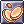 | 405 bytes | AloeLeaflet | 1 | |
| 21:38, 26 February 2021 | Descript2.png (file) | 404 bytes | IllegalKross | 1 | ||
| 02:00, 18 September 2015 | Coldice.png (file) | 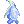 | 404 bytes | AloeLeaflet | 1 | |
| 09:46, 9 September 2016 | Aresicon.png (file) | 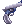 | 404 bytes | Appleproject | 1 | |
| 09:40, 9 September 2016 | Maelstrom.png (file) | 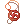 | 403 bytes | Appleproject | 1 | |
| 15:18, 7 January 2016 | Empty Shadow.png (file) | 403 bytes | Pruu | for use in Pruu's Guide to Kagerou/Oboro for PVM | 1 | |
| 02:30, 3 October 2016 | Cloaking.png (file) |  |
403 bytes | Windrell | 1 | |
| 02:00, 18 September 2015 | Finenoodle.png (file) | 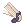 | 402 bytes | AloeLeaflet | 1 | |
| 02:28, 3 October 2016 | Backsliding.png (file) | 402 bytes | Windrell | 1 | ||
| 12:46, 15 June 2018 | Foxear.png (file) | 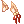 | 401 bytes | Kowloons | 1 | |
| 23:20, 24 November 2015 | MarvelousWig.gif (file) | 400 bytes | Lai | 1 | ||
| 15:04, 5 October 2016 | Elemental Change.png (file) | 400 bytes | LethalConcept | 1 | ||
| 06:45, 30 September 2016 | Vulture's Eye.png (file) |  |
399 bytes | Cyphers | 1 | |
| 08:29, 1 June 2017 | Petites Tail.png (file) | 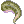 | 399 bytes | Jack | 1 | |
| 00:59, 18 September 2015 | Emptybottle.png (file) | 398 bytes | AloeLeaflet | 1 | ||
| 19:17, 30 September 2016 | Double Strafe.png (file) | 398 bytes | Inberun | 2 | ||
| 07:57, 19 October 2016 | Wind Cutter.png (file) |  |
397 bytes | Ggboyz | 1 | |
| 11:23, 15 April 2016 | 2000.png (file) |  |
397 bytes | Mayo | 1 | |
| 23:20, 24 November 2015 | HappyWig.gif (file) | 396 bytes | Lai | 1 | ||
| 14:56, 5 October 2016 | Soul Strike.png (file) | 395 bytes | LethalConcept | 1 | ||
| 23:23, 24 November 2015 | ShinyWig.gif (file) | 394 bytes | Lai | 1 | ||
| 17:47, 16 July 2018 | FS.png (file) | 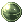 | 394 bytes | Colours | 1 | |
| 21:38, 25 October 2016 | Sm sword.png (file) | 393 bytes | Tachi | 1 | ||
| 22:48, 18 December 2015 | MCitrin.png (file) | 393 bytes | Adri | 1 | ||
| 08:31, 1 June 2017 | Ice Piece.png (file) | 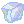 | 393 bytes | Jack | 1 | |
| 23:19, 24 November 2015 | FantasticWig.gif (file) | 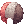 | 393 bytes | Lai | 1 | |
| 02:15, 5 October 2016 | Sonic Blow.png (file) |  |
392 bytes | Inberun | 1 | |
| 11:38, 6 November 2016 | Echo Song.png (file) | 390 bytes | Ggboyz | 1 | ||
| 23:27, 16 September 2015 | FortuneSword.png (file) | 389 bytes | AloeLeaflet | 1 | ||
| 20:18, 17 March 2017 | Bash.png (file) | 389 bytes | Yurif25 | 1 | ||
| 17:49, 16 July 2018 | EA.png (file) | 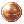 | 388 bytes | Colours | 1 | |
| 08:31, 1 June 2017 | Cold Ice.png (file) | 387 bytes | Jack | 1 |
{kind=link}
{kind=link}
{kind=link}
{kind=link}
{kind=link}
{kind=link}
{kind=link}
{kind=link}
{kind=link}
{kind=link}
{kind=link}
{kind=link}
{kind=link}
{kind=link}
{kind=link}
{kind=link}
{kind=link}
{kind=link}
{kind=link}
{kind=link}
{kind=link}
{kind=link}
{kind=link}
{kind=link}
{kind=link}
{kind=link}
{kind=link}
{kind=link}
{kind=link}
{kind=link}
{kind=link}
{kind=link}
{kind=link}
{kind=link}